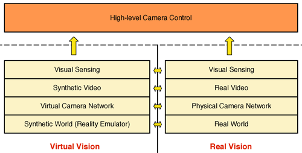

Virtual Vision
for Smart Camera Sensor Networks
Faisal Z. Qureshi and Demetri Terzopoulos
Synopsis
Virtual worlds can serve as software laboratories for carrying out camera networks research. Espousing this unorthodox view, we developed virtual vision paradigm that brings together advanced computer graphics and vision simulation technologies to serve the needs of camera networks research. Visually and behaviorally realistic environments, populated with self-animating autonomous pedestrians are used to study, develop, and evaluate vision systems [1]. Shao and Terzopoulos [2] developed such a 3D environment---a 3D reconstruction of the original Penn train station (Fig. 1). Within this environment virtual cameras generate synthetic video feeds. The video streams emulate those generated by real surveillance cameras, and low-level image processing mimics the performance characteristics of a state-of-the-art surveillance video system. A consequence of this paradigm is our recent work on developing smart camera networks and intelligent surveillance systems capable of persistent human observation in large-scale synthetic environments.
{kind=link}
Virtual Vision vs. Real World

Publications
"Smart Camera Networks in Virtual Reality," F.Z. Qureshi, D. Terzopoulos, Proceedings of the IEEE, 96(10), October, 2008, 1640—1656, (Special Issue on "Smart Cameras").
"Virtual Vision: Visual Sensor Networks in Virtual Reality,'' F.Z. Qureshi, D. Terzopoulos, Proc. ACM Symposium on Virtual Reality Software and Technology (VRST 2007), Newport Beach, CA, November, 2007, 247—248.
Movies
The following movies showcase virtual vision paradigm for camera networks research.
Camera Tasking through announcement, bidding, and selection
Persistent Coverage
Cameras decide among themselves how best to observe the pedestrian as she makes her way through the virtual Penn station. An operator selects the pedestrian to be tracked in camera 7.
Tracking
We developed appearance-based pedestrian tracker that mimic the performance of trackers deployed on physical systems.
Fixation and Zooming
Image drive fixation and zooming routines.
PTZ Camera Stabilization while zooming and fixating
Background Subtraction
Background subtraction for passive wide-FOV cameras to identify foreground objects. We do not rely upon background subtraction for PTZ cameras. Background model is learnt over time through observation. The model is also periodically updated to account for changes in the background. Note that background subtraction is not perfect (as when using real video).
Acknowledgements
The research reported herein was made possible in part by a grant from the Defence Advanced Research Projects Agency (DARPA) of the Department of Defence. We thank Dr. Tom Strat, formerly of DARPA, for his generous support and encouragement. We also thank Wei Shao and Mauricio Plaza-Villegas for their invaluable contributions to the implementation of the Penn Station simulator.
References
[1] D. Terzopoulos, “Perceptive agents and systems in virtual reality,” in Proc. 10th ACM Symposium on Virtual Reality Software and Technology, (Osaka, Japan), pp.1–3, Oct. 2003.
[2] W. Shao and D.Terzopoulos, “Autonomous pedestrians,” in Proc. ACMSIGGRAPH/Eurographics Symposium on Computer Animation, (LosAngeles, CA), pp. 19–28, July 2005.